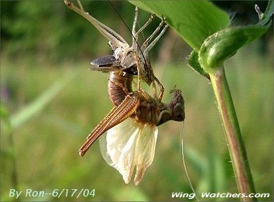
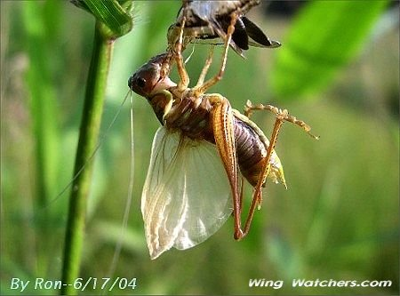

| Emergent Grasshopper Series |
| These photos of an emergent Long-horned Grasshopper species were taken during the span of one hour. They show part of what a grasshopper goes through in becoming a full fledged adult. The series was taken by Ron Pelletier using a Nikon 4300 digital camera that was handheld to a Swarovski 80HD Spotterscope. |
|
|  |
|
|  |
| Click here for Site Map |
| Contact Us |
| Hosted by Go Daddy.com ---- ©Wing Watchers.net - 2002 - 2011 |